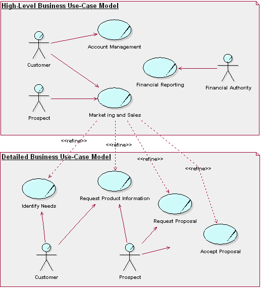
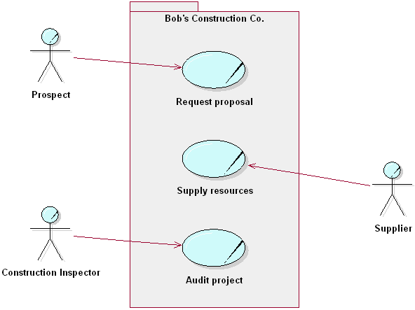
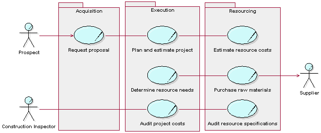
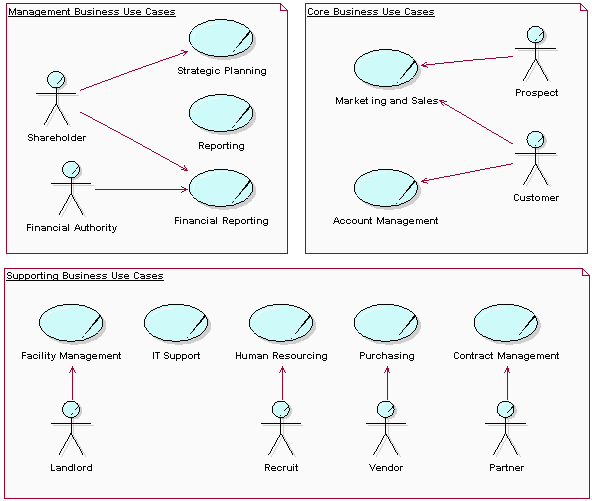

| Концепция: Modeling Large Organizations |
 |
|
| Связанные элементы |
|---|
Small and Large OrganizationsThe differences between a small and a large organization lie in the broader spectrum of products, often within several totally different product families. Generally the higher the complexity of products, the more distributed the organization and the market. This results in a larger number of more complex business use cases, involving many more employees with more specialized tasks. The techniques proposed here can be applied independently or in combination. High-Level and Detailed Business Use CasesA company's executive management, as well as its process owners, are interested in their company's business models-the management must work with the company's strategic objectives, whereas the process owners and leaders need a detailed picture of how their process should be performed. If the differences between the executives' and the process owners' views of the organization are too great, you could satisfy their needs by developing two different, yet related, sets of business use cases. One model, for the executives, would contain a set of high-level business use cases that showed the intent and purpose of the organization. The other model, for the process owners, would contain a detailed set of use cases that helped clarify how the organization needs to function internally. For each high-level business use case, you could define one, or several, detailed business use cases representing the same activities in the organization. For example, you could start with the primary business actor, detail the results and services he or she is interested in, or even specialize the business actor itself, then develop a separate business use case for each detailed area. If you want to engineer your organization one business use case at a time, you can apply this technique incrementally. First make a high-level use-case model of the entire business and rank the business use cases in an overview, then identify one or several detailed business use cases for the highest ranked, high-level business use cases. There is a one-to-one relationship between a high-level business use case and its set of detailed business use cases. The relationships between business use cases of the two categories are represented as <<refinement>> relationships, a stereotype of dependency. A high-level business use case, and the group of detailed business use cases it represents, can be presented in the same diagram.  High-level business use cases and detailed business use cases. The detailed business use cases have been identified by detailing the results in which the customer and potential customer are interested. Superordinate and Subordinate ModelsThe technique for modeling business use cases presented so far is most easily applied to companies that have a single business area and whose business activities are concentrated geographically at one location. For larger companies distributed over several locations, it may be necessary to scale up the technique. Therefore, to model companies built of independent-yet-cooperating parts, you can build one superordinate Business Use-Case Model that describes the whole business, followed by one subordinate Business Use-Case Model for each business area. Business systems can be used to define the various areas of responsibility, different physical locations, or interacting parts of the business. To explore realizations of the superordinate business use cases, you can identify business systems and show how they collaborate to perform the workflow. At this level, a business system corresponds to a business area. Collaborations between the business systems can be explicitly defined and clarified using interfaces at a business level. These "interfaces" describe the set of responsibilities provided by the business system.  Superordinate and subordinate models of an organization  In this example, we see the superordinate business use case Request Proposal being refined into the subordinate business use cases Request Proposal, Plan and Estimate Project, and Estimate Resource Costs at the business system level. The superordinate business use case Supply Resources has been refined into the subordinate business use cases Determine Resource Needs and Purchase Raw Materials at the business system level. Each business system can then be treated as an organization of its own, fulfilling the interfaces defined in the superordinate Business Analysis Model. The derivation of subordinate business use cases (having established the required interfaces for each business system to realize the superordinate business use cases) can proceed in a manner analogous to that described in Concept: Use-Case Flowdown. Layered Business ModelsIn software engineering, a technique used to master the complexity of very large systems is called layering. The idea behind this technique is to separate the application-specific parts from the more general parts of the system, so that the program units and program services can be reused. When structuring organizations, the same principles are often naturally applied. For example, in the bottom layer you find resources that provide general services; somewhere in the middle layer you often find resources that support business-specific activities; and in the top layer you find business area-specific or product-specific specialists, Research and Development, and sales force activities. Core business use cases use resources from all layers. Therefore, layering is not a question of qualifications or seniority, but of uniqueness and importance in relation to the company's business ideas. A task handled by a business worker from the general skill layer could be as qualified as any other. The work in core business use cases and supporting business use cases where business-specific information systems, production lines, and other types of business infrastructure are developed, may require equally business-specific skills from the same layered organization. Guideline: Business System contains an example of business systems and their interfaces. While this example does not explicitly illustrate layers, the business systems in this example are layered implicitly. For an explanation of the terms "core," "supporting," and "management business use case," see Technique: Business Use Case Model-specifically the section on different categories of business use cases. Business Use Cases and Classes in a Layered ModelStructuring the organization into layers does not change the business use case, because the same results still need to be produced. It does, however, change the business use-case realizations. Compared to a non-layered Business Analysis Model, a layered Business Analysis Model should be developed with two recommended restrictions in mind:
Without these restrictions, a layered structure quickly degenerates. Note that these restrictions apply to the case where the most general parts of the business are found in lower layers, while the most specific (regarding a particular market segment) are found in the upper layers. Organization charts tend to be the other way around-from general at the top to specific at the bottom. When identifying business workers and assigning activities to them, the skills needed in order to perform an activity needs to be understood. A business worker from the layer that organizes resources for those particular skills must perform an activity that by its nature requires a particular skill. Instead of having as few business workers as possible, which is the normal rule of thumb when designing a business use case, you should now have as few business workers as possible-with as wide responsibilities as possible-in each layer. Workflows, business workers, business entities, and business events in lower layers should be designed with generality in mind to provide services shaped for reuse in several areas. Business workers and business entities can be organized into business systems according to their business specificity. Business systems that include the most general competencies and phenomena are found in the bottom layer; while the most company-specific business systems are found in the top layer. Core Business Use Cases vs. Supporting Business Use CasesBusiness use-case realizations will, to differing degrees, engage business workers from different layers. Business use-case realizations with a high degree of top-layer involvement (highly specific) set the profile of the company, implement the business idea and function as the profit centers. These correspond to core business use cases and supporting business use cases to provide core business use cases with essential, business-area-specific infrastructure. Business use-case realizations in lower layers, without top layer business workers, provide the general services required to keep the company running. They can be abstract and define workflows performed as parts of other business use cases-for example, billing activities that conclude a sales business use case. They can also be concrete, executing on their own and performing activities that do not need business area-specific competence, like bookkeeping. These normally correspond to supporting business use cases. A layered structure reflects those kinds of skills that are key to the business ideas, whether needed in core business use cases or supporting business use cases, as well as those skills that are less specific. This could be a good starting point for systematically analyzing the company's available resources. Models of the Entire OrganizationIn many cases, you are interested only in detailed information about one or a few of your business processes. However, to provide context, it can be practical to identify the complete set of business process and briefly describe each of them. This results in a model that includes core business use cases, supporting business use cases, and management business use cases. See the section on different categories of business use cases in Technique: Business Use Case Model. Supporting business use cases-such as core business use cases, business-specific information systems, computer networks, and premises-are responsible for the development and maintenance of a company's infrastructure, among others. From the modeling perspective, there are no real differences between core business use cases and supporting business use cases. Both types of business use cases should have the same requirements of usability and effectiveness. To perform successfully, both kinds of business use cases might require the same types of resource. A supporting business use case in one organization-for example a software development business use case-might be a core business use case in another. The major difference is for whom the business use cases work. At the request of a business owner, the supporting business use cases develop the business in cooperation with the affected business use case owners and operators. In a model of the entire business, a typical business actor would be the Board. When the modeling is delimited to the supporting business use cases only, typical business actors are Business Use-Case Owner and Business Use-Case Operator. Management business use cases, on the other hand, are responsible for managing the business; that is, for running and developing the other business use cases according to directives from the owner in order to initiate and supervise core business use cases and supporting business use cases according to directives from the owner. The Business Analysis Model describes how executives, resource owners, business use-case owners, business-use case leaders, and business use-case operators need to cooperate. Typical business actors are the Owner or the Board.  A model of an entire organization At the other end of the scale, many minor tasks must be taken care of, such as keeping the computer network running, answering the phone, and cleaning the coffee machine. These tasks, however, are not part of a defined business use case. For example, if you intend to be certified according to the ISO 9000 Standard, these activities need to be included in the model as well. A straightforward approach is provided by this rule of thumb: If it is a full-time job, assign the activity to a specific business worker. If it is less than a full-time job, assign the activity to an existing business worker with the right skill requirements without trying to include it in any business use case. |
© Copyright IBM Corp. 1987, 2006. Все права защищены.. |